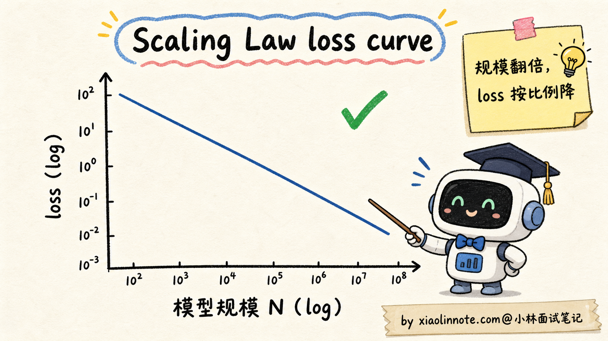
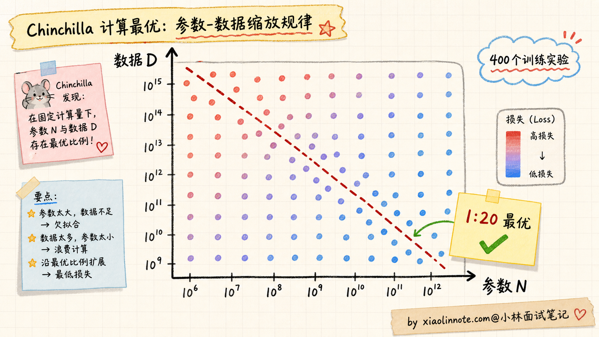
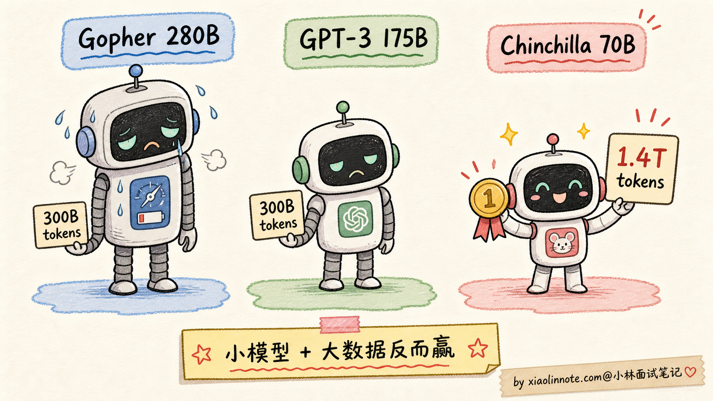
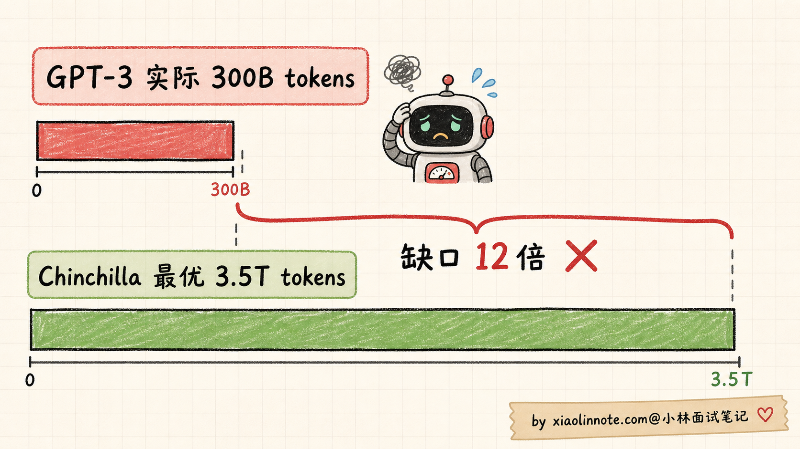
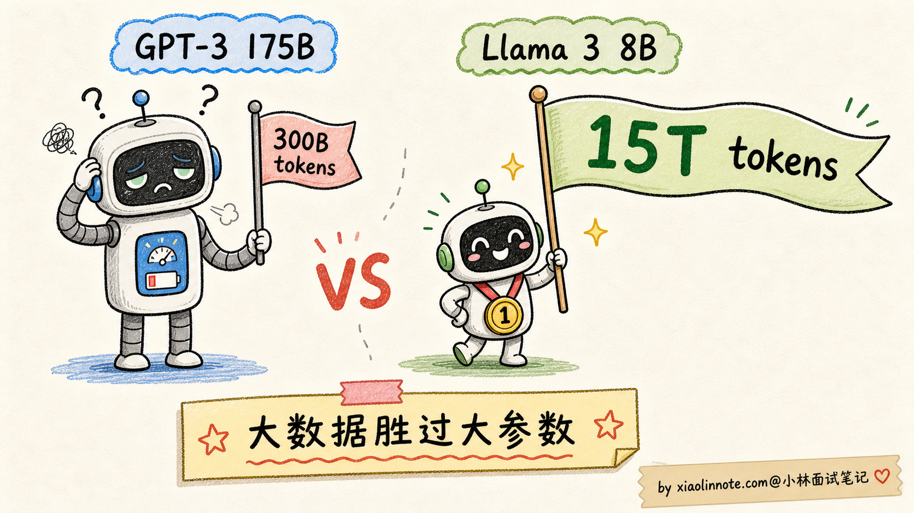
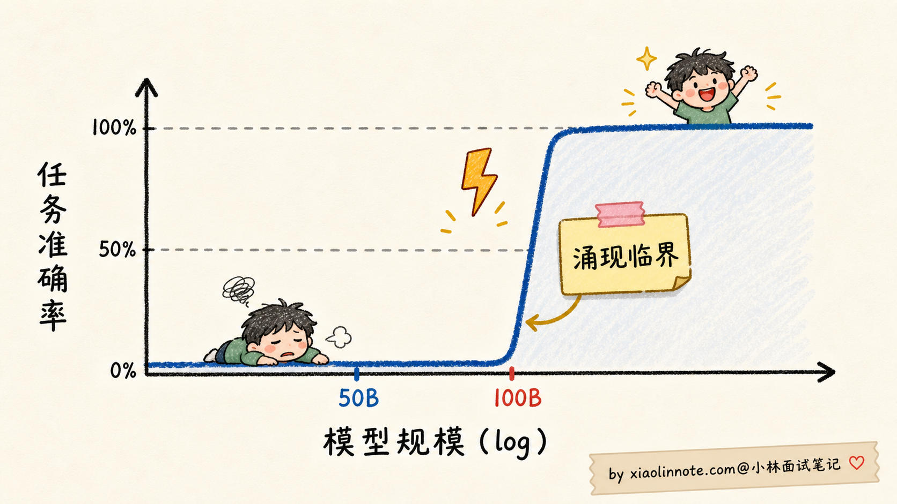
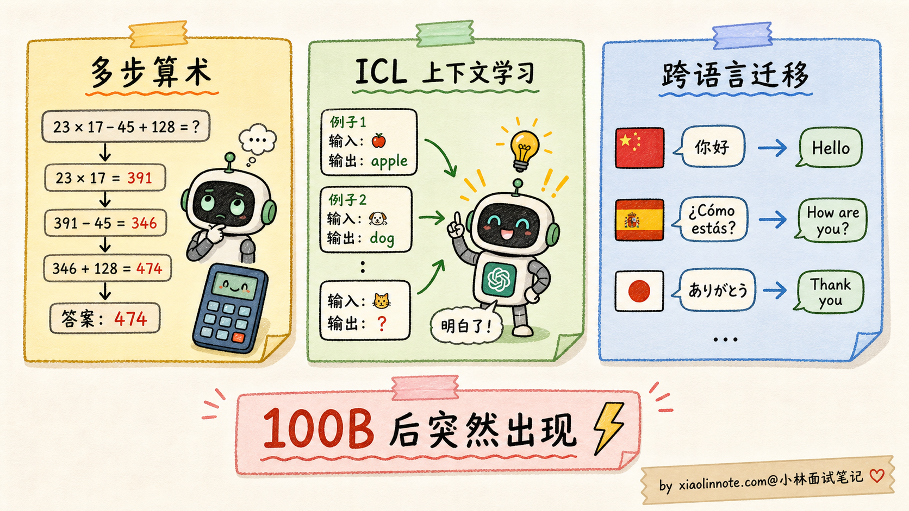
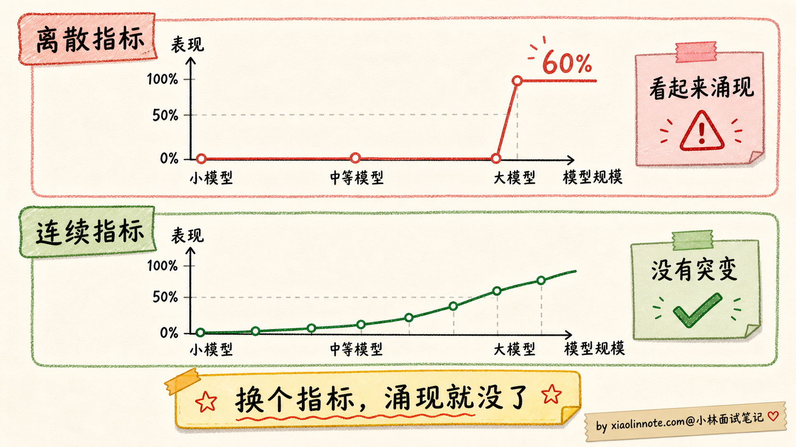
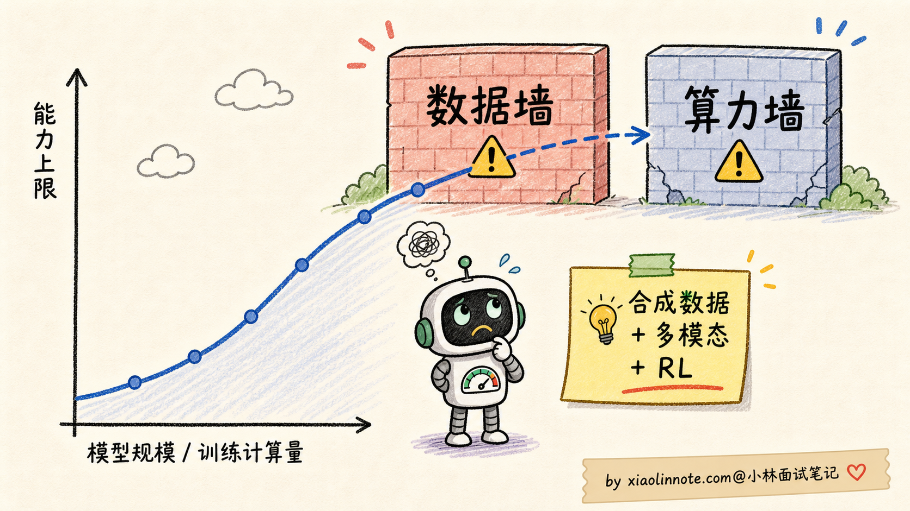

什么是 Scaling Law？大模型的「涌现能力」是怎么回事？
👔面试官：来讲讲什么是 Scaling Law？大模型的「涌现能力」是怎么回事？
🙋♂️我：Scaling Law 就是模型越大越好嘛，参数越多效果越强。涌现能力就是大模型突然变强了。
👔面试官：……「越大越好」是错的。Chinchilla 论文你看过吗？为什么 GPT-3 175B 后来被一个 70B 的小模型超过？「越大越好」忽略了什么变量？
🙋♂️我：哦哦，可能还要看数据量？
👔面试官：对了一半。那具体的最优配比是什么？为什么是这个比例？再说，「涌现」具体是指什么？是不是越涌现越好？为什么有人说涌现可能是「测量假象」？
🙋♂️我：呃……测量假象我没听过。
👔面试官：2023 年斯坦福一篇论文 Are Emergent Abilities of Large Language Models a Mirage 提出了挑战，认为很多涌现现象只是评估指标设置带来的错觉，换个连续指标曲线就平滑了。这种学术争议都不知道，去面试就是被怼。回去补一下。
这几下追问其实在敲两件事，Scaling Law 不是一句「越大越好」，涌现也不是「玄学闪现」。背后有具体的数学规律（Chinchilla 1:20 配比）和工程含义（什么时候该堆算力、什么时候该补数据），得逐条拎清楚。
💡 简要回答
我理解 Scaling Law（缩放定律）讲的是大模型的损失值如何随模型规模、训练数据量、训练算力这三个量变化的可预测关系。OpenAI 在 2020 年提出，DeepMind 在 2022 年的 Chinchilla 论文里精修。
核心发现是三个。
第一，损失值随这三个量按幂律下降（loss ∝ N^-α，N 是规模）。意思是规模翻倍，损失值按可预测的比例下降，没有「饱和点」。
第二，参数和数据要按一定比例配。Chinchilla 给的最优比例是 1:20（每个参数配 20 tokens）。GPT-3 175B 用 300B tokens 是「严重欠训」，比例只有 1:1.7；DeepMind 训了一个 70B 模型配 1.4T tokens（1:20），反而超过了 GPT-3 和自家更大的 280B Gopher。
第三，Llama 3 这类后续模型用了远高于 1:20 的训练 token，效果继续提升。更准确地说，Chinchilla 的 1:20 是「固定训练算力下的 compute-optimal 配比」，不是「数据再多就一定没用」的上限。后来的小模型大量喂数据，很多时候是在用更多训练计算换更低的推理成本。
涌现能力（Emergent Abilities） 是 Scaling Law 的一个特殊副产物。当模型规模超过某个临界值（典型是 50B-100B 参数），某些能力会从「完全不能」突变到「能做」：多步推理、上下文学习、跨语言迁移、代码理解等。
但要注意 2023 年斯坦福的 Mirage 论文挑战了「涌现」的定义。他们认为很多涌现现象只是「评估指标的不连续性」造成的测量假象，换成连续指标后曲线就平滑了。学术争议还在继续，但工程层面，模型规模带来的能力跃迁是客观存在的。
对工程选型的启发是：不是越大越好，要看「参数 × 数据 × 算力」三者的最优搭配；数据规模可能比参数规模更值得加大（Llama 3 8B 用 15T tokens 跑赢 GPT-3 175B 就是例证）；同样算力下，按 Chinchilla 比例训出来的小模型，可能比胡乱堆参数的大模型还强。
📝 详细解析
Scaling Law 是什么？为什么它震撼了整个业界
要理解 Scaling Law 的重要性，得先回到 2018-2020 年那个语境。
那时候的深度学习圈子里，对「模型加大有没有用」是有分歧的。一派人觉得「模型再大也有上限，参数加多了就饱和了」，另一派人觉得「先把模型加大试试再说」。但谁都没有量化证据，全凭经验和直觉。
2020 年 OpenAI 的 Kaplan 等人做了一项震撼业界的研究：他们系统训练了一系列从几万参数到几十亿参数的语言模型，发现一个惊人的规律。模型的损失值（loss）随模型参数 N、训练数据量 D、训练算力 C 这三个量按幂律下降。
数学上写出来是这样的：
loss(N) ≈ (N_c / N)^α_N
其中 N_c 是某个常数，α_N 是幂律指数。直观理解就是：模型规模翻倍，损失值按一个固定比例下降，而且这个比例可以提前算出来。

这个发现震撼业界的关键有三点：
第一，它是可预测的。不是「试试看运气」，而是「我现在有 X 算力，按 Scaling Law 算一下，最终能达到什么 loss」。这给了大公司投资大模型的底气，因为可以预测投入产出比。
第二，它没有看到饱和点。论文里把规模一直加大到当时能训的极限，loss 还在按幂律下降，没有「再加就不动了」的拐点。这给业界传递了一个信号：继续加大规模就还能继续提升。
第三，算力、数据、参数都可以独立做幂律分析。也就是说，可以分别问「我加倍参数能下降多少 loss」「我加倍数据能下降多少 loss」「我加倍算力能下降多少 loss」。这为后来的 Chinchilla 把这三个变量联立起来打下了基础。
但 OpenAI 这版 Scaling Law 有一个隐含的问题：它没回答「参数和数据应该按什么比例配」。当时业界的普遍做法是「能加多少参数加多少，数据用差不多就行」。结果训出了一批「严重欠训」的大模型，最典型的就是 GPT-3。
Chinchilla 2022：参数和数据要按 1:20 的比例配
2022 年 DeepMind 发了一篇论文 Training Compute-Optimal Large Language Models，里面提出了著名的 Chinchilla 缩放定律，把 OpenAI 的 Scaling Law 精修了一步。
DeepMind 做了一个相当壕的实验：训了 400 个不同规模的 Transformer 模型，参数从 70M 到 16B，数据量从 5B tokens 到 500B tokens，全部跑完拟合损失曲面。

实验结果很清晰：给定固定的训练算力 C，参数和数据要按接近 1:20 的比例配，最终损失更低。换句话说，参数 N 每加倍，数据 D 也要按比例加倍，经验上大约是「每个参数配 20 个 token」。这个 1:20 不是自然常数，而是 Chinchilla 实验条件下拟合出来的 compute-optimal 经验点，但它把业界从「只堆参数」拉回了「参数和数据要均衡」。
为了验证这个发现，DeepMind 训了一个对照实验：
| 模型 | 参数 | 数据 | 训练算力 | 最终效果 |
|---|---|---|---|---|
| Gopher（DeepMind 自家旧版） | 280B | 300B tokens | X | 基线 |
| GPT-3 | 175B | 300B tokens | 0.7X | 比 Gopher 略弱 |
| Chinchilla（按 1:20 配比） | 70B | 1.4T tokens | X | 明显超过 Gopher 和 GPT-3 |
注意：Chinchilla 的训练算力和 Gopher 接近（FLOPs 总量相同量级），但参数砍到 1/4，数据加到 4.7 倍。结果是用更小的模型 + 更多的数据，明显超过了 4 倍参数的 Gopher。

这个对照让业界恍然大悟：当时所有人训的大模型都严重欠训。
具体看 GPT-3 的比例：
GPT-3: 175B 参数 / 300B tokens = 1 : 1.7
最优比例: 1 : 20
GPT-3 数据缺口: 12 倍
GPT-3 应该配 3.5T tokens 才是 Chinchilla 最优，但实际只用了 300B，差了一个数量级。如果当时 OpenAI 知道这个结论，可能就不会训那么大的 GPT-3，而是训一个更小但配足数据的模型。

Chinchilla 改变了整个大模型行业。2022 年之后训的所有主流模型，配比都比之前激进得多。比如 LLaMA 1 的 7B 模型用了 1T tokens（比例 1:140），LLaMA 2 的 7B 用了 2T tokens（1:285），都远超 Chinchilla 推荐的 1:20。越来越多模型主动「过量」喂数据，因为 Chinchilla 让大家意识到：参数加得没那么疯也行，数据要喂够才是关键。
但故事到这里还没结束。Chinchilla 这个 1:20 的配比，真的是终极答案吗？2024 年的 Llama 3 给了一个让所有人都没想到的答案。
Llama 3 时代：Chinchilla 不是数据上限
2024 年 Meta 训 Llama 3 时，做了一件激进的事：把数据量推到 1:1875 的极端配比。
具体数据：
Llama 3 8B: 8B 参数 / 15T tokens = 1 : 1875
（Chinchilla 推荐: 1 : 20）
数据规模是 Chinchilla 推荐的 94 倍。按当时的常识，应该早就过拟合或者收益递减了。但 Meta 实测发现：模型在数据量从 1T 推到 15T 的过程中，loss 一直在稳定下降，效果一直在提升。
最后训出来的 Llama 3 8B 在多项基准测试上超过了 GPT-3 175B。一个 8B 的小模型打赢了 22 倍参数的大模型，靠的就是数据规模。

这件事重新定义了业界对 Scaling Law 的理解。原来的 Chinchilla 1:20 配比不是「数据上限」，而是「给定训练算力时，参数和数据怎么分配更划算」的经验答案。如果你愿意投入更多训练计算，继续喂更多高质量 token，loss 仍然可能下降，只是边际收益会变小。
所以更准确的说法是：Chinchilla 告诉我们「别只堆参数，数据也要跟上」；Llama 3 之后的趋势告诉我们「为了降低推理成本，可以训练一个较小参数、更多 token 的模型」。这两句话不矛盾，只是在优化不同目标，一个偏训练算力最优，一个偏部署成本最优。
Qwen3-0.6B 把这个趋势推到了更极端，用 36T tokens 训一个 0.6B 的小模型，比例 1:60000，远超 Llama 3 的 1:1875。这说明在追求「推理时性能 / 部署成本」最优的方向上，「小参数 + 海量数据」已经是当前最热门的路径。
为什么会出现这个趋势？背后有两个很现实的工程原因。第一是推理成本：参数越多，推理时显存和延迟越高。一个 8B 模型部署一台消费级 GPU 就够，175B 模型要好几台 H100，成本天差地别。如果 8B + 大数据能达到同等效果，何乐不为？第二是数据相对便宜：算力是真金白银的硬件投入（一张 H100 三万美元，集群上千万），数据虽然也要花钱清洗，但相比 GPU 集群仍然便宜得多。在算力受限的环境下，把算力多花在「跑过更多数据」而不是「跑过更多参数」更划算。
涌现能力：量变到质变的临界点
Scaling Law 还有一个让所有人都没想到的副产物，叫涌现能力（Emergent Abilities）。
涌现的精确定义是：「某项能力在小模型上完全看不到，规模超过某个临界点之后突然出现」。它不是平滑上升，而是一条「先趴在地上、到某个点垂直冲天」的折线。

学术界总结了几类典型的涌现能力，每一类都有具体的数据点支撑：
1. 多步算术推理
Google PaLM 论文里测试 5 步算术应用题。准确率随规模变化：
8B -> ~0%
62B -> ~5%
540B -> ~60%
中间没有任何渐进过程，从「完全不会」直接到「会一大半」。这种跳变只能用「涌现」来解释。
2. In-Context Learning（上下文学习）
GPT-3 175B 出现之前，业界共识是「想让模型学新任务，必须微调」。GPT-3 出来之后，OpenAI 发现只要在 Prompt 里给几个例子，模型就能学会新任务。这个能力在 1.5B 的 GPT-2 上完全看不到，在 175B 的 GPT-3 上突然就有了，临界点在 100B 左右。
3. 跨语言泛化
GPT-3 训练数据 92% 是英文，但训完之后能直接处理中文、阿拉伯语、甚至冰岛语。模型从来没被显式教过「中文怎么说」，它通过大规模混合语料的预训练，自己学会了不同语言间的对应关系。这种能力也是规模到了 100B 左右才稳定出现。

涌现的临界规模通常出现在 50B-100B 这个区间。这个区间到底是什么物理意义，业界还没有定论。一个流行的解释是：模型大到一定程度，注意力头数、隐藏维度等达到了「能编码复杂推理结构」的最低门槛。再小就编码不了，再大就开始展示这些能力。
Mirage 挑战：涌现可能是测量假象
正当涌现能力被业界广泛接受时，2023 年斯坦福的一篇论文炸了锅：Are Emergent Abilities of Large Language Models a Mirage?
论文作者 Schaeffer 等人观察到一个奇怪现象：很多「涌现」能力只在某些评估指标下才出现，换个指标就消失了。
举个具体例子。多步算术任务，常规评估指标是「最终答案是否完全正确」（exact match）：
- 答错任何一步，最终答案就错，得 0 分
- 答对所有步骤，得 1 分
这是一个离散的二元指标，要么 0 要么 1。在这个指标下，看到的就是「小模型一直 0 分，大模型突然跳到 60%」的涌现曲线。
但如果换成「部分正确率」（比如答对了前 4 步算 0.8 分），同样的实验数据，能力提升曲线就变成了平滑的对数曲线，没有任何突变。

论文的核心论点是：「涌现」可能不是模型本身的非线性特性，而是评估指标的不连续性放大了一个本来连续的能力提升过程。
这个挑战引发了广泛讨论。后续也有论文反驳，认为某些涌现现象在多种连续指标下都能观察到，不能完全用「指标假象」解释。学术争议还在继续，目前的中立结论是：
- 能力跃迁是客观存在的：从工程效果看，模型规模到了 100B 之后，确实能做小模型完全做不了的事
- 但「涌现」这个概念可能被过度神化了：很多所谓的「突变」其实是连续提升 + 指标放大效应
- 不存在「魔法的涌现规模」：不同任务的临界点不同，有的早有的晚，没有统一的「100B 之后必然涌现」
这个争议对面试来说很有用。如果你能在面试里指出 Mirage 论文的存在，并把双方观点都讲清楚，会显得你真的看过论文，不是只在背技术博客。
对工程选型的启发
理解了 Scaling Law 和涌现的内核，对实际工程选型有几个直接启发：
1. 不是越大越好，要看 Chinchilla 比例
参数和数据要匹配，至少不能出现「参数很大但数据很少」的欠训状态。1:20 可以作为理解 Chinchilla 的标尺，但不是所有模型都必须卡死在这个比例。选型时更应该问：这个模型是不是训练充分？数据质量怎么样？它是为训练算力最优设计，还是为推理成本最优设计？
2. 数据规模可能比参数规模更值得加大
如果你有限的算力是 X，与其训一个 7B + 100B tokens 的模型，不如训 3B + 250B tokens。同样的算力开销，后者效果通常更好，推理还便宜。Llama 3 和 Qwen3 都验证了这个直觉。
3. 推理成本和参数规模强相关
部署一个 175B 模型要好几台 H100，部署 8B 模型一张消费级 GPU 就够。在效果差不多的前提下，「小参数 + 海量数据」的模型在推理成本上有天然优势。这也是为什么 2024 年之后开源社区疯狂做小模型大数据。
4. 涌现能力对模型选型的影响
如果你的任务依赖「涌现能力」（多步推理、ICL、跨语言迁移），最低门槛是 30B-70B 这个量级，再往下就不行。如果是简单分类、抽取、摘要任务，7B-13B 完全够用，没必要硬上大模型。
Scaling Law 的天花板与未来
最后简单提一下 Scaling Law 的尽头，作为面试加分项。
虽然到目前为止还没看到饱和点，但业界已经开始担心两个潜在天花板。
第一，数据见底。互联网上高质量公开文本的总量是有限的，估计在 10T-50T tokens 这个量级。Llama 3 已经用了 15T，Qwen3 用了 36T，再过几年就会把人类历史上所有公开文本都用完。这就是「数据墙（Data Wall）」问题。
应对方向有三个：
- 合成数据：用强模型生成训练数据训弱模型（DeepSeek-Math、Qwen2.5-Math 都用了大量合成数据）
- 多模态数据：扩展到图像、视频、音频，把人类所有形式的信号都纳入训练
- 强化学习数据：用环境交互生成数据（DeepSeek R1 的 RL 训练就属于这一类）
第二，算力增长放缓。摩尔定律已经接近物理极限，GPU 算力的增长速度在放缓。能买得起 10 万张 H100 的玩家就那么几个，进一步堆参数的边际成本越来越高。

这些挑战是 2026 年大模型领域最热的话题之一。能在面试里聊到这些，说明你不只是知道现在，还在思考未来。
🎯 面试总结
回到开头那段对话，问到 Scaling Law 和涌现能力，最重要的是把 Scaling Law 的本质讲清楚。它讲的是 loss 和参数 N、数据 D、算力 C 的幂律关系（loss ∝ N^-α）。OpenAI 2020 年提出，给业界传递了「规模可预测地带来效果」这个革命性结论，是后面所有大模型烧钱投入的理论基础。
讲完本质之后，自然引出 Chinchilla 配比的故事。DeepMind 2022 年训 400 个模型实验，发现固定训练算力下，参数和数据接近 1:20 更划算。GPT-3 175B 配 300B tokens 是严重欠训，70B 的 Chinchilla 配 1.4T tokens 反而明显超过 175B 级别的旧模型。这个发现改变了整个行业，2022 年之后大家不再盲目堆参数，而是更重视训练 token 和数据质量。
接下来讲 Llama 3 时代的进一步变化。Meta 把数据推到 1:1875 的极端配比，用 8B + 15T tokens 训出超过 GPT-3 175B 的效果，说明 Chinchilla 不是「数据上限」。当目标变成「推理便宜、部署容易」时，小参数 + 大数据会非常有吸引力，这是 2024 年之后的重要趋势。
最关键的是讲清涌现能力 + Mirage 挑战。涌现是某项能力从「完全不会」突变到「能做」，临界规模 50B-100B。但 2023 年斯坦福 Mirage 论文挑战，认为很多涌现是「评估指标不连续」造成的假象，换连续指标曲线就平滑了。学术争议在继续，但能力跃迁客观存在。能在面试里提出这个学术争议，会显示你真的看过论文，不是只在背技术博客。
如果还想再加分，提一句 Scaling Law 的天花板（数据墙 + 算力墙）和应对方向（合成数据、多模态、强化学习），让面试官知道你对未来趋势有思考。能讲到这一层，已经是面试里很难追问的水平了。